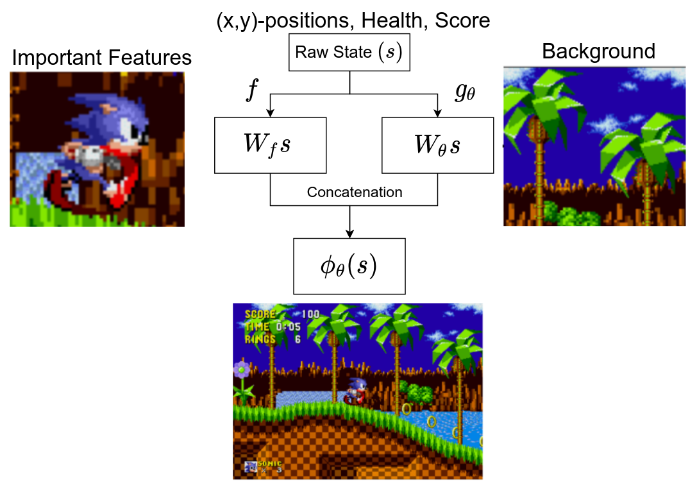
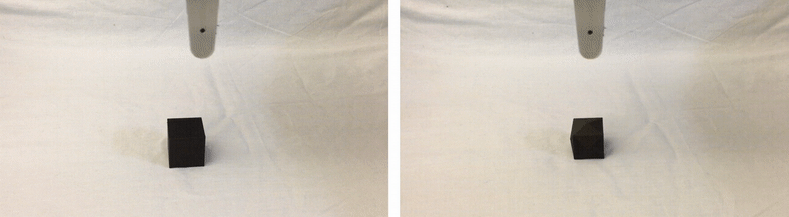
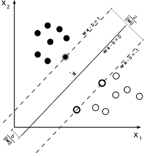

|
Research
I am interested in understanding and building high-capacity intelligent systems that learn, generalize and, therefore, have the potential to succeed in the ever-changing world. This entails a wide spectrum of topics including robotic learning, reinforcement learning, representation learning, and generalization -- both concrete statistical generalization of highly expressive function approximators, and generalization in more abstract sense such as compositional generalization or, more broadly, combining existing knowledge of the world (e.g. language or physics) to solve new problems efficiently.
This is really a circumlocutory way of saying I like deep neural networks and robots.
|
|
|
Fantastic Generalization Measures and Where to Find Them
Yiding Jiang*, Behnam Neyshabur*, Hossein Mobahi, Dilip Krishnan, Samy Bengio
International Conference on Learning Representations (ICLR), 2020
"Science meets the Engineering of Deep Learning" workshop at NeurIPS 2019 (oral)
We propose a procedure that captures the causal realtionship between complexity measures and the generalization gap of neural networks, and conduct a large scale study to showcase the effectiveness of the procedure; we also observed that many popular complexity measures do not capture the desired property and proposed new complexity measures.
|
|

|
Observational Overfitting in Reinforcement Learning
Xingyou Song, Yiding Jiang, Stephen Tu, Yilun Du, Behnam Neyshabur
International Conference on Learning Representations (ICLR), 2020
We prove the existence of overfitting for reinforcement learning in high-dimensional state space and demonstrate the benefit of implicit regularization in this setting.
|
|
|
Language as an Abstraction for Hierarchical Deep Reinforcement Learning
Yiding Jiang, Shixiang Gu, Kevin Murphy, Chelsea Finn
Neural Information Processing Systems (NeurIPS), 2019
project page /
environment
We use compositional language as the abstraction between high-level and low-level policies to solve complex and temporally extended tasks.
|
|

|
Adversarial Grasp Objects
David Wang*, David Tseng*, Pusong Li*, Yiding Jiang*, Menglong Guo, Michael Danielczuk, Jeffrey Mahler, Jeffrey Ichnowski, Ken Goldberg
IEEE Conference on Automation Science and Engineering (CASE), 2019
IEEE Spectrum article
We explore methods of synthesizing 3D objects that are "adversarial" to grasp planners.
|
|

|
Predicting the Generalization Gap in Deep Networks with Margin Distributions
Yiding Jiang, Dilip Krishnan, Hossein Mobahi, Samy Bengio
International Conference on Learning Representations (ICLR), 2019
blog post
We introduce Generalization Gap Predictor (GGP) and propose a new GGP based on the hidden activations of deep neural networks that outperforms existing predictors.
|
|
|
CLEVR-Robot Environment
GitHub repository
The CLEVR-Robot environment is a reinforcement learning environment that aims to provide a research platform for developing RL agents at the intersection of vision, language, and continuous/discrete control.
|
|
|
Deep Model Generalization Dataset (DEMOGEN)
GitHub repository
The DEMOGEN dataset is a the collection of 756 trained neural network models and the code to use them. This is the same dataset used by our work "Predicting the Generalization Gap in Deep Networks with Margin Distributions", and is to our knoweledge the first dataset of models for studying generalization.
|
|